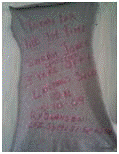

Send us an E-mail
Return to the Home Page
Private Pilots License Requirements
Introductory Flight - The first step is to take an introductory flight with a Certified Flight Instructor (CFI). This flight introduces the student to the world of flight. With the help of our qualified CFI, the student gets to take off, perform in-flight maneuvers, and land during this exciting flight.
Flight Medical Certificate - Next you will need a medical exam by an FAA certified physician. In Butte, Dr. Gene Hughes JR, MD can be found at Butte Aviation, 494-6694. In Butte, Dr. George Biancarelli, MD can be found at the Pintler Clinic, 563-8686. If you live outside the Butte, MT area, you can find an Aviation Medical Examiner on the FAA Website.
Pre-Solo Knowledge Test - The FAA requires that all pilots become knowledgeable about the theory behind flying and FAA regulations. You CFI will preliminarily test this knowledge prior to your first solo flight. In order to prepare for this test, we recommend you purchase some flight training manuals. There are several good sources including Gleim, Sporty's Pilot Shop, ASA, and the King Schools. Visit our Aviation Supply Store online to purchase a variety of training materials and supplies.
We learned with Gliem Books. Click the following link to find some of your own.
If you feel like you're ready, try taking a few practice tests. You can download the FAA's Knowledge Test Question Bank but the answers are not included. Fortunately, there are many good websites that create practice tests for you to try your hand at, some of our favorites are Exams4Pilots and RisingUp aviation. To take either of these tests you will want the FAA Test Supplement at your fingertips.
|
Solo Flight - When you're ready, your instructor will turn you lose to fly on your own. The first day, you'll get to do a few Touch and Go's where you take off and land repeatedly. After your solo, it's aviation tradition for you to lose the shirt off your back. Your instructor will cut the back of your shirt off and you'll both autograph it in celebration. We'll hang this in our office until you take your Check-Ride. You'll never be so excited to lose your shirt. |
 |
Pre Check-Ride Knowledge Test - The culmination of book study will be an FAA Knowledge test. This test will be given electronically at an FAA Testing Center. You know right away if you pass so you can celebrate with dinner after the test.
Flight Experience - Prior to your check ride you will need to fulfill the flight requirements including 40 hrs of flight time in two categories:
|
Flight Training 20 hrs of flight training from a CFI including:
|
Solo Flight Time 10 hrs of solo flight including:
|
Check-Ride - When you're ready, your instructor will call an FAA examiner and set up a time for you to take your Check Ride. This is the pilot's practical exam. You'll spend some time on the ground discussing the knowledge you've gained so far. If the examiner is satisfied with this oral exam, he'll say ...Let's Go Flying... Now you get to show off your new skills. The examiner will have you perform the maneuvers you've learned. When you pass, you are officially a pilot ready to hit the skies as a Private Pilot.
For more information, check out the FAA's website on Becoming a Pilot.
If you're ready to get started, find a flight school near you on Pilot Journey